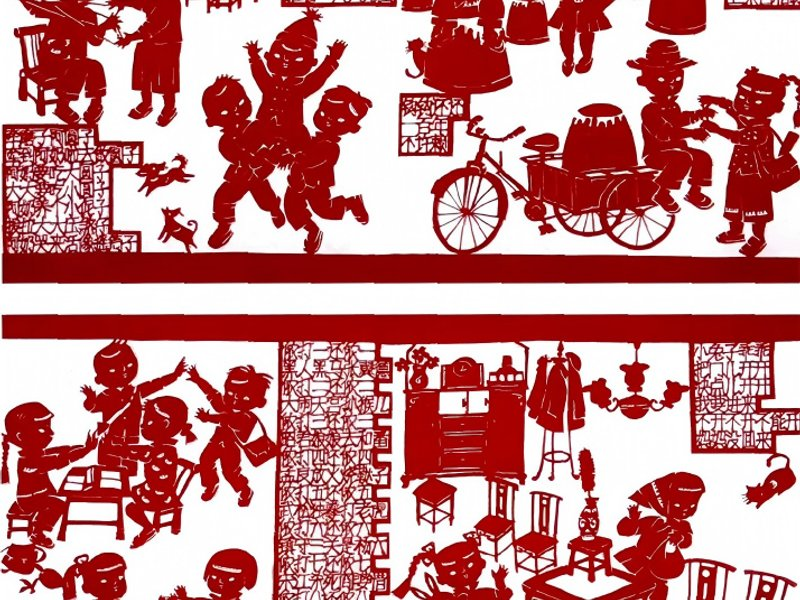
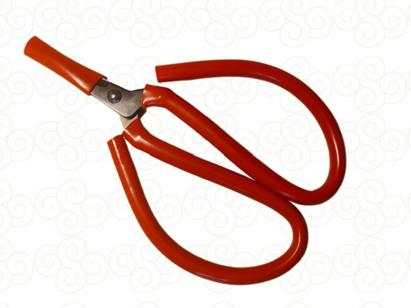
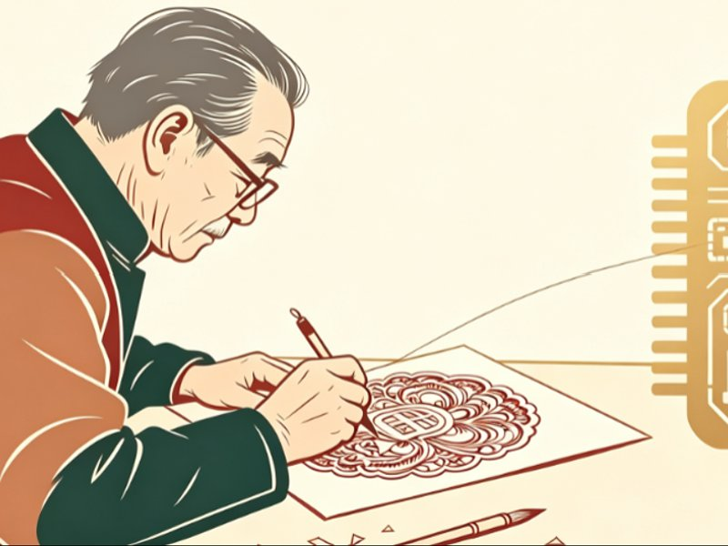
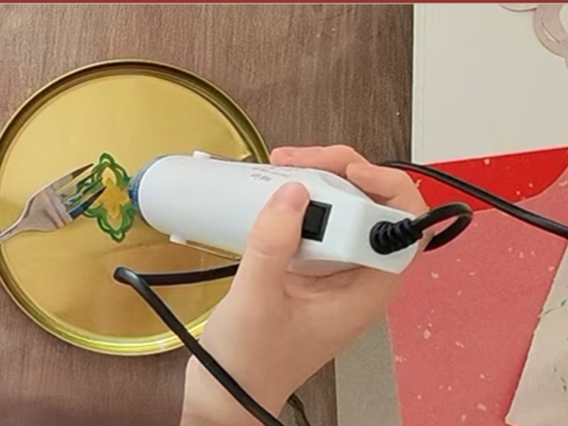
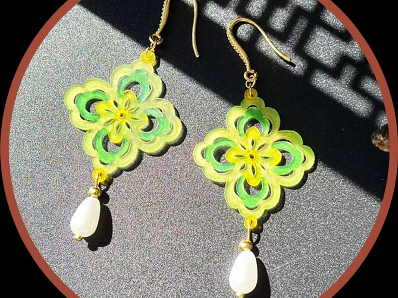
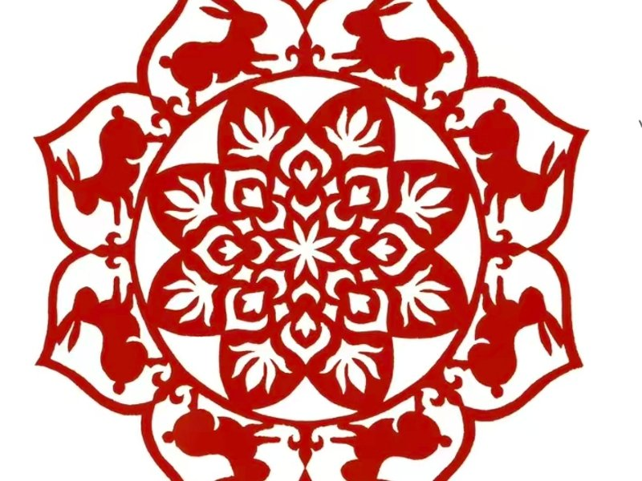
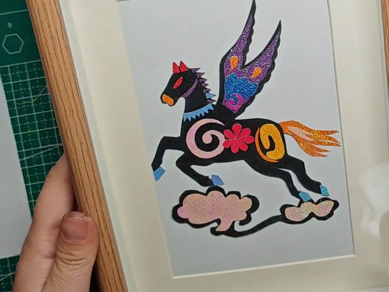

✂ 剪纸小家
以剪纸为主题的社区创课 · 一个安静的作品小家
全部课程

课时1：辨识流派 · 海派文脉
2026-09-15
理解剪纸非遗定义与核心特点，对比北方、江南、海派三大流派差异，认识海派四项独有技法，学习基础工具与安全规范。

课时2：剪刀折叠 · 对称生花
2026-09-22
掌握剪刀标准握法与两种下剪手法，学习二折到八折及风琴连续折法，牢记折叠边即对称轴、严禁剪断折痕核心规则。

课时3：AI转纹 · 徐汇入画
2026-09-29
认识徐汇在地文化元素，掌握AI剪纸提示词四要素，学会图生图功能把照片转化为可剪刻的AI纹样底稿。
课时4：刻刀精雕 · 匠心成画
2026-10-06
完整掌握刻刀实操全套要点：握刀姿势、刻制顺序、底稿固定方法，吃透镜像问题四种场景与应对。

课时5：热缩剪形 · 饰美生活
2026-10-13
理解热缩片与红纸剪纸的相反逻辑，掌握热缩片刻刀剪刀操作要点，完成热缩片剪刻上色与热缩定型半成品。

课时6：热缩组装 · 日用成饰
2026-10-20
完成热缩片半成品修边打孔，学习圆嘴钳尖嘴钳双钳组装开口圈的标准流程，做成完整剪纸风格耳环。

课时7：转印布袋 · 徐汇记忆
2026-10-27
掌握剪纸热转印帆布包的完整流程，结合社会主义核心价值观选用含蓄寓意纹样，理解纯棉材质要求与高温操作规范。

课时8：剪刻花灯 · 家国团圆
2026-11-03
综合复习剪刀刻刀技法，完成中秋花灯剪纸灯面半成品，感受剪纸镂空透光的核心特点，传递团圆和谐文化内涵。

课时9：组装花灯 · 点亮社区
2026-11-10
把课时8的灯面半成品组装成完整剪纸花灯，安装骨架、提手、LED灯与流苏，展示作品交流创作心得。

课时10：生肖拼贴 · 祝福长卷
2026-11-17
了解十二生肖民俗文化，对比三大流派生肖剪纸风格，掌握拼贴剪纸分层制作要点，完成天马行空小马拼贴作品。